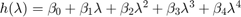
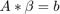

Contents
EE547 - Hw 4
prepared by Paul Adams
function hw4()
Problem 1
syms s t A = [14, -75, 190, -224, 96; 1, 0, 0, 0, 0; 0, 1, 0, 0, 0; 0, 0, 1, 0, 0; 0, 0, 0, 1, 0]; % inverse Laplace Transform solution t1 = timeit(@() inverse_laplace_soln(A)); Phi1 = inverse_laplace_soln(A); % matrix exponential solution t2 = timeit(@() expm(A*t)); Phi2 = expm(A*t); % Jordan form solution [V, J] = jordan(A); Phi3 = V*expm(J*t)*inv(V); t3 = timeit(@() expm(J*t)); % Function of a square matrix t4 = timeit(@() of_a_square_matrix(A)); Phi4 = of_a_square_matrix(A);
Timing results
fprintf('Median Jordan form solution: %5.3f ms\n', t3*1000) fprintf('Median Exponential Matrix solution: %5.3f ms\n', t2*1000) fprintf('Median Inverse Laplace solution: %5.3f ms\n', t1*1000) fprintf('Median Functions of a square matrix solution: %5.3f ms\n', t4*1000)
Median Jordan form solution: 6.085 ms Median Exponential Matrix solution: 6.163 ms Median Inverse Laplace solution: 25.164 ms Median Functions of a square matrix solution: 420.134 ms
Problem 2
A = [-12 -55 -120 -124 -48;
1 0 0 0 0;
0 1 0 0 0;
0 0 1 0 0;
0 0 0 1 0];
% a
syms s t
disp('Eigenvalues of A:')
disp(eig(A))
disp('Characteristic polynomial of A:')
disp(det(s*eye(size(A, 1)) - A));
% b
[Q, J] = jordan(A);
disp('Similarity matrix of A:')
% Q = round(1e4*Q)/1e4;
disp(Q)
disp('Jordan form of A:')
disp(J)
At = A*t;
Jt = J*t;
f = (Q*expm(Jt))\Q + (Q*Jt)\Q;
disp('f(A):')
disp(f)
Eigenvalues of A:
-4.0000 + 0.0000i
-3.0000 + 0.0000i
-2.0000 + 0.0000i
-2.0000 - 0.0000i
-1.0000 + 0.0000i
Characteristic polynomial of A:
s^5 + 12*s^4 + 55*s^3 + 120*s^2 + 124*s + 48
Similarity matrix of A:
21.3333 -40.5000 0.1667 -8.0000 20.0000
-5.3333 13.5000 -0.1667 4.0000 -8.0000
1.3333 -4.5000 0.1667 -2.0000 3.0000
-0.3333 1.5000 -0.1667 1.0000 -1.0000
0.0833 -0.5000 0.1667 -0.5000 0.2500
Jordan form of A:
-4 0 0 0 0
0 -3 0 0 0
0 0 -1 0 0
0 0 0 -2 1
0 0 0 0 -2
f(A):
[ exp(4*t) - 1/(4*t), 0, 0, 0, 0]
[ 0, exp(3*t) - 1/(3*t), 0, 0, 0]
[ 0, 0, exp(t) - 1/t, 0, 0]
[ 0, 0, 0, exp(2*t) - 1/(2*t), - t*exp(2*t) - 1/(4*t)]
[ 0, 0, 0, 0, exp(2*t) - 1/(2*t)]
Functions
OF_A_SQUARE_MATRIX
function x = of_a_square_matrix(A)
eigvals = round(1e4*roots(charpoly(A)))/1e4; syms lambda t
compute  on spectrum of
on spectrum of
f = symfun(exp(lambda*t), lambda); f_ = g_of_lambda(eigvals, f);
construct 
h = symfun(lambda.^(0:4), lambda); h_ = g_of_lambda(eigvals, h);
solve the system with  where are the coefficients of
beta = h_\f_;
solve for
x = zeros(5); for i = 1:size(A, 1) x = x + beta(i)*A^(i-1); end
G_OF_LAMBDA
function y = g_of_lambda(eigvals, g)
syms lambda eigvals = sort(eigvals); % get the multiplicies of eigvals n = hist(eigvals, max(eigvals)); idx = 1; for i = 1:length(n) l = eigvals(i); % take derivative to the n-1 for eigenvalue with multiplicity n for j = 1:n(i) y(idx, :) = diff(g(lambda), lambda, j-1); y(idx, :) = subs(y(idx, :), lambda, eigvals(i)); idx = idx + 1; end end
INVERSE_LAPLACE_SOLN
function y = inverse_laplace_soln(A) syms s t sI_A = s*eye(size(A,1)) - A; y = ilaplace(inv(sI_A));